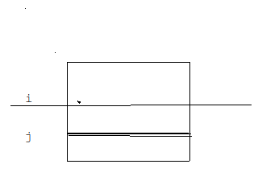

摘抄 参考资料
矩阵其实很多东西跟高斯消元扯得上关系。。。
目录
- 求逆
- 秩
- 行列式
- 关于秩和行列式的杂谈
- 余子式&代数余子式&拉普拉斯展开
- 矩阵树
- 伴随矩阵
- 求有向图所有点为根的生成树数量
求逆
矩阵A左乘一个矩阵B，A会以行为单位进行改变；
矩阵A右乘一个矩阵B，A会以列为单位进行改变；
有了这个性质就直接把一个矩阵T放在A左边，高斯消元时把操作转移成矩阵乘积的形式。
把A消成e，T就成为A的逆元了。
(e为单位矩阵)
秩
把矩阵看成很多个不同的向量，最多能提取出的线性独立的向量的个数。（行秩和列秩总是相等）
这里有一个性质：只有满秩的矩阵才会有逆元。
行列式
∣A∣表示A的行列式。
一种定义方式：
∣A∣=p∑((−1)τ(p)×A1,p1×A2,p2×⋯×AN,pN)
其中p是任意1到n的排列，τ(p)则是这个排列里逆序对的数量。
而那个求和式的每一项可以看做是在矩阵中选出N个数，使得他们的行列都不重合。
性质1: 互换矩阵的两行(列)，行列式变号。
性质2: 如果矩阵有两行(列)完全相同，则行列式为0。
性质3: 如果矩阵的某一行(列)中的所有元素都乘以同一个数k，新行列式的值等于原行列式的值乘上数k。
性质4: 如果矩阵有两行(列)成比例(比例系数k)，则行列式的值为0。
性质5: 如果把矩阵的某一行(列)加上另一行(列)的k倍，则行列式的值不变。
证明来自贴顶参考资料。
根据性质5，我们可以像高斯消元那样把矩阵消成上三角（注意符号）。
根据行列式定义，一个上三角矩阵的行列式=对角线乘积。（不这样排列必然会踩到0）
这样就可以O(n3)求行列式了。
当然，假如说有一个比较恶心的模数，可以考虑用辗转相除来消去系数。
另一种比较形象的意义：
设一个矩形它在原座标系中的面积为s1，经过矩阵A变换后在新的座标系中面积为s2。
会有：
∣A∣=s1s2
关于秩和行列式的杂谈
现在考虑有一个不满秩的矩阵A。
任何n维空间经过A变换都会被降维打击，因为A的向量撑不起n维。
根据行列式性质，我们可以在行列式不变的前提下对矩阵A进行操作把若干行消成0。
所以这个矩阵的行列式为0。
根据上面对行列式的第二种定义，任何有“面积”的矩形"面积"都要变成0。
没有“面积”，那只能说明至少有一维消失了，与前面相照应。
在变换中，丢失一维时丢失的信息量是很大的（你想想自己怎么变成二维再变回来）
这样导致的无法还原和不满秩矩阵没有逆显得和谐。
余子式&代数余子式&拉普拉斯展开
现在有一个矩阵A。
定义一类矩阵Di,j表示A删去i,j所在的行和列后形成的矩阵。
可以列出余子式：
ai,j∣Di,j∣
和代数余子式：
(−1)i+jai,j∣Di,j∣
代数余子式可以作为∣A∣的递推。
选定一行i进行递推，式子名称就变成了拉普拉斯展开。。
∣A∣=j∑n(−1)i+jai,j∣Di,j∣
矩阵树
一个还不会证明的定理。
简单描述是度数矩阵-邻接矩阵的∣Droot,root∣。
这是有向图的情况：
加一条i−>j的边时，Aij−=1,Aii+=1;
删去根所在的行和列，然后求行列式；
得到的是儿子指向父亲的生成树的方案数。
父亲指向儿子就可以看成反着建图。
无向图可以看成是一种边成对出现的特殊形式，易证任何一个点为根数量都一样。
伴随矩阵
还是一个矩阵∣A∣。
现在定义他的伴随矩阵A∗。
令ai,j∗=(−1)i+j×∣Dj,i∣
∣Dj,i∣!!!
这个矩阵有什么特殊的地方？
令矩阵B=A×A∗。
对于在B对角线上的数有：
bi,i=j∑ai,j×aj,i∗=j∑ai,j×(−1)j+i∣Di,j∣=∣A∣
最后一步看前面的拉普拉斯展开。
不是在对角线上的数呢？
bi,j=k∑ai,k×ak,j∗=k∑ai,k×(−1)k+j∣Dj,k∣
形式很像拉普拉斯展开，我们可以把它理解成另一种样子：

现在我们对B选定了第j行，并进行拉普拉斯展开。
但现在问题是从左往右一个个枚举时，用的是i那一行上的数。
也就是说这样子作相当于把i那一行复制到j那一行，并进行拉普拉斯展开。
这时候i和j两行一样了，那行列式就变成了0。
所以Bi,j=∣A∣×[i==j?1:0],也就是B=单位矩阵×∣A∣。
求有向图所有点为根的生成树数量
令e为单位矩阵。
根据上面会有：
A×A∗=B=∣A∣∗e
A∗=∣A∣∗A−1
回忆伴随矩阵定义，有ai,i∗=(−1)i+i×∣Di,i∣=∣Di,i∣
（这里的D依然是对A定义的）
矩阵树定理不就是选i求∣Di,i∣吗？
一次逆元，顺便做行列式。
O(N3)解决。
特征多项式
∣A∣还是表示A的行列式。
会发现有些时候矩阵A和向量V会有下面神奇的玩意(λ为常数)：
AV=λV
那么会有(I为单位矩阵):
AV−λV=AV−λIV=(A−λI)V
现在不考虑V为0的情况。
那么A−λI乘上某个向量会变成0?矩阵没满秩吧？
所以∣A−λI∣=0,把λ看成是一个自变量，那么就出现了关于A的特征多项式：f(λ)=∣A−λI∣
(行列式懒得写了)
(虽然f(λ)=0……)